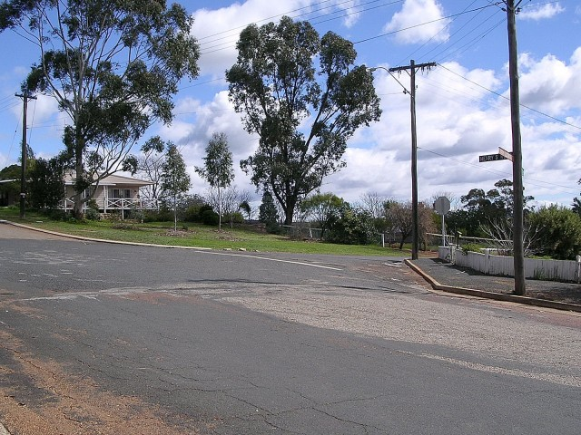
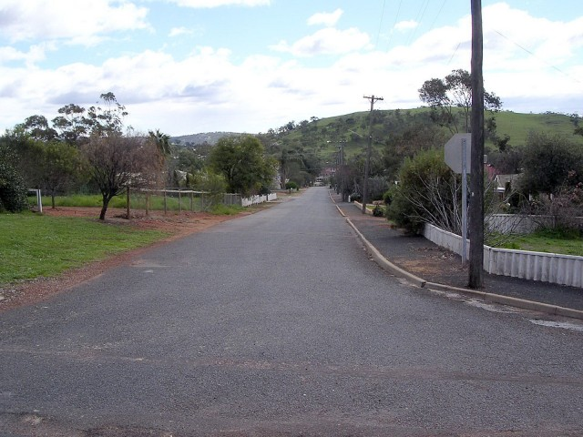
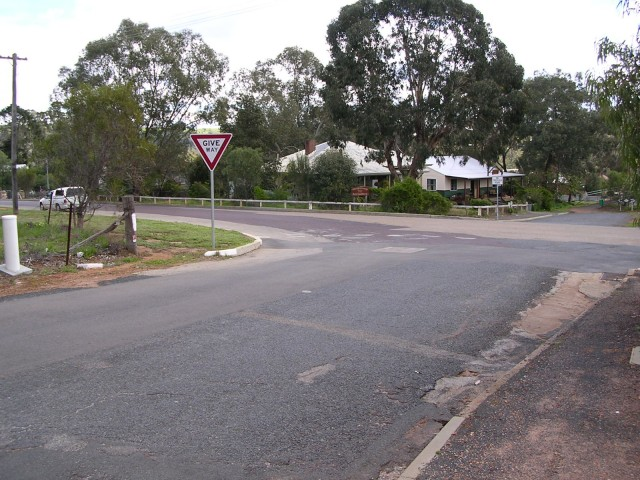
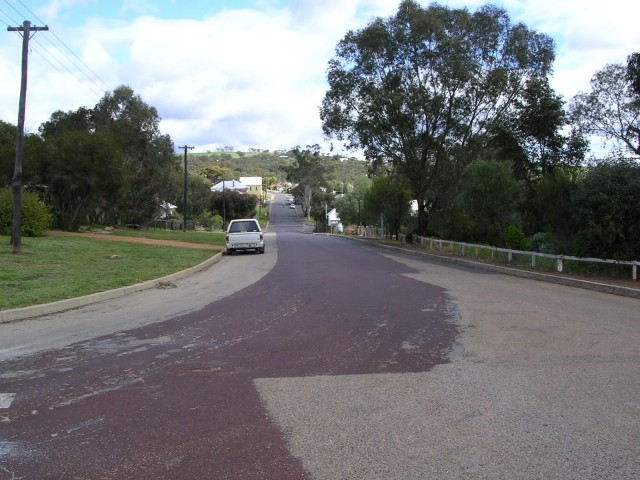
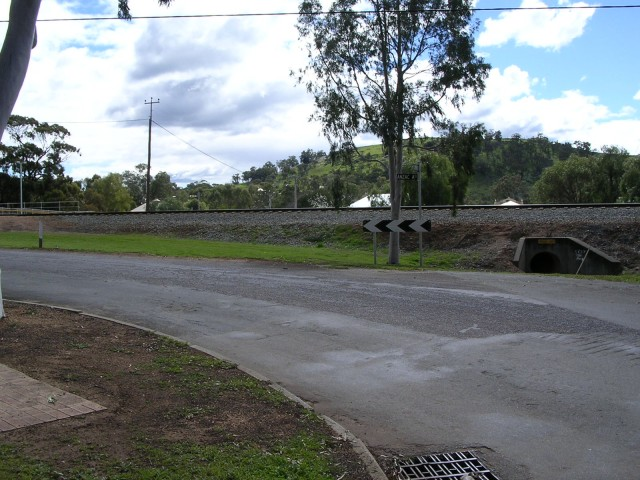
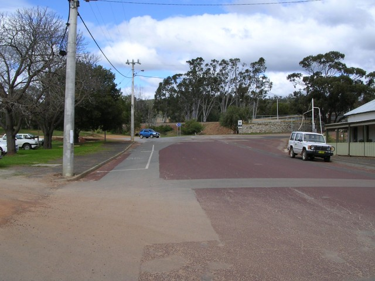
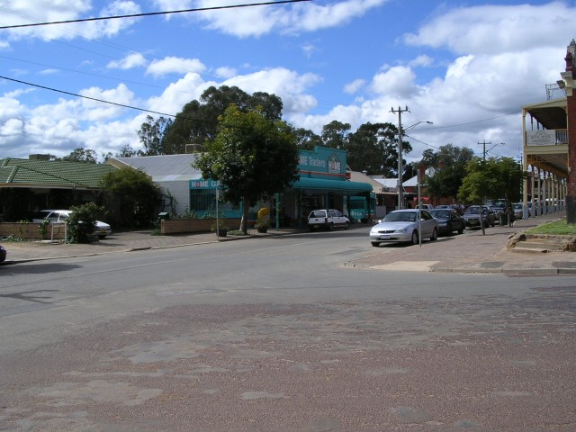

Numbers on the map represent the location where the photographs were taken. Scroll down to view the photographs.
Toodyay - Duke St. via Fiennes St and Templar Ln to Clinton St
|| Contents || Stirling Tce / Henry St | Duke St / Fiennes St / Clinton St || Home ||
Numbers on the map represent the location where the photographs were taken. Scroll
down to view the photographs.
Return to racingcircuits.net's Photo Archive Main Index

9 - Turn right into Duke Street from Henry Street

10 - Looking down Duke Street

11 - Left turn from Duke Street into Fiennes Street.

12 - Fiennes Street.

13 - Railway now cuts Clinton Street [Templar Lane is now a sports area]

14 - Clinton Street below railway line

15 - Right turn into Stirling Tce from Clinton Street.
Photographs and Text ©Neil Fackerell. Reproduced here with kind permission.